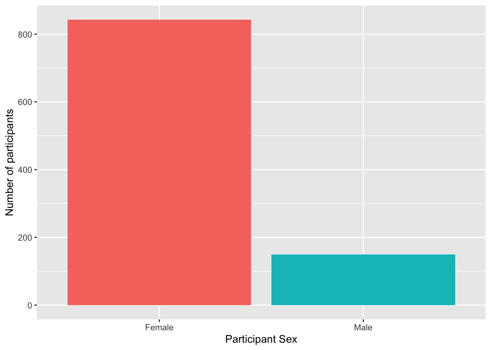
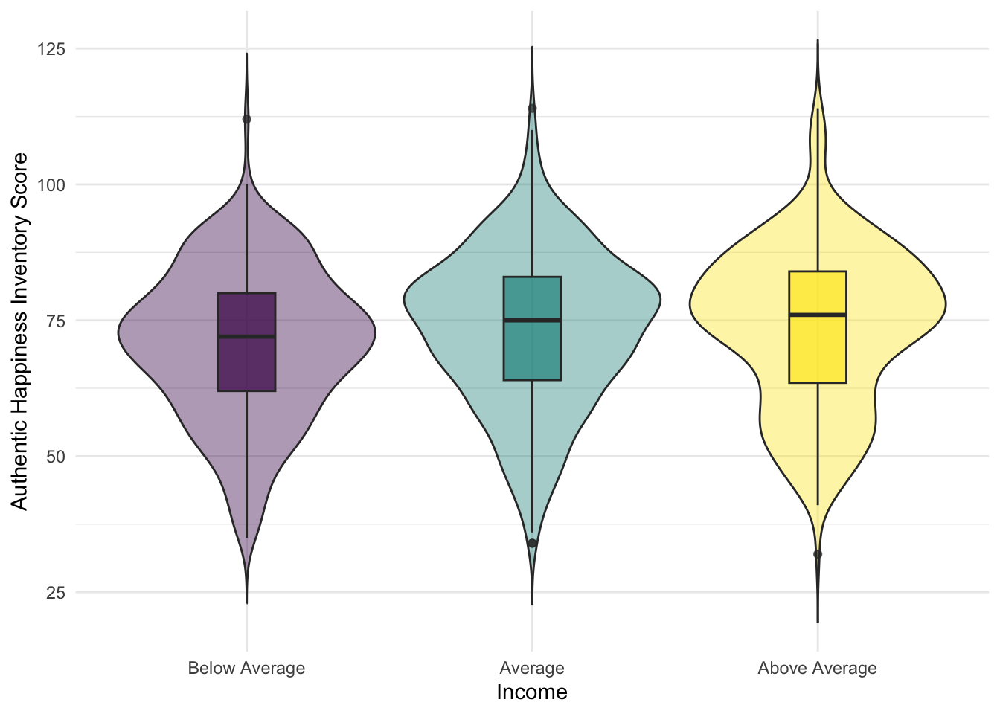

7 Intro to Data Visualisation
7.1 Data visualisation
Data Visualisation. Being able to visualise our data, and relationships between our variables, is an incredibly useful and important skill. Before we do any statistical analyses or present any summary statistics, we should visualise our data as it is:
- A quick and easy way to check our data make sense, and to identify any unusual trends.
- A way to honestly present the features of our data to anyone who reads our research.
- A means of checking that our data fits with the assumptions of our descriptive and inferential tests and of the statistical analyses that we intend to use.
As Grolemund and Wickham tell us in R for Data Science:
Visualisation is a fundamentally human activity. A good visualisation will show you things that you did not expect, or raise new questions about the data. A good visualisation might also hint that you’re asking the wrong question, or you need to collect different data. Visualisations can surprise you, but don’t scale particularly well because they require a human to interpret them.
The main package we use for visualisation within the tidyverse umbrella is called ggplot2 and the main starting function of all visualisations is ggplot(). The reason we say the “main starting function” is that ggplot() builds plots by combining layers (see, for example, Figure @ref(fig:img-layers) from (nordmann2021?)) - i.e. one function creates the first layer, the basic plot area, and you add functions and arguments to add additional layers such as the data, the labels, the colors, etc. If you’re used to making plots in other software this might seem a bit odd at first, however, it means that you can customise each layer separately in order to make very complex and beautiful figures with relative ease. You can get a sense of what is possible from (this website but we will start off slow and build as we go!
7.2 Setting up to Visaulise
We will use the same data files as in Chapter 2, Starting with Data, as we already know what the data contains so we can focus just on visualising it.
7.2.0.1 Activity 1: Set-up
This data contains happiness and depression scores:
- Download
ahi-cesd.csvandparticipant-info.csvinto the folder on your computer for this chapter!- Make sure that you have downloaded both .csv files above and saved them in your chapter folder. Remember not to change the file names at all and that
data.csvis not the same asdata (1).csv.
- Make sure that you have downloaded both .csv files above and saved them in your chapter folder. Remember not to change the file names at all and that
- Open RStudio and set the working directory to your chapter folder. Ensure the environment is clear.
- If you’re on the server, avoid a number of issues by restarting the session - click
Session-Restart R
- If you’re on the server, avoid a number of issues by restarting the session - click
- Open a new R Markdown document and save it in your working directory. Call the file “DataVisualisation1”.
- Delete the default R Markdown welcome text and insert a new code chunk.
- Type and run the below code to load the
tidyversepackage and to load in the data files.
You should have a good idea about what this code is doing but if not here is a brief summary:
- It loads in the tidyverse
- It reads both datafiles as tibbles into separate objects,
datandpinfo. - Joins the data together into one larger tibble and stores it in the object called
all_dat - Select a number of columns to keep in our data and discards others.
7.3 Dealing with Factors and Categories
Before we go any further we need to perform an additional step of data processing that we have glossed over up until this point. First, run the below code to look at the structure of the dataset:
Rows: 992
Columns: 8
$ ahiTotal <dbl> 32, 34, 34, 35, 36, 37, 38, 38, 38, 38, 39, 40, 41, 41, 4…
$ cesdTotal <dbl> 50, 49, 47, 41, 36, 35, 50, 55, 47, 39, 45, 47, 33, 27, 3…
$ sex <dbl> 1, 1, 1, 1, 1, 1, 2, 1, 2, 2, 1, 2, 1, 2, 2, 1, 1, 1, 1, …
$ age <dbl> 46, 37, 37, 19, 40, 49, 42, 57, 41, 41, 52, 41, 52, 58, 5…
$ educ <dbl> 4, 3, 3, 2, 5, 4, 4, 4, 4, 4, 5, 4, 5, 5, 5, 4, 3, 4, 3, …
$ income <dbl> 3, 2, 2, 1, 2, 1, 1, 2, 1, 1, 2, 1, 3, 2, 2, 3, 2, 2, 2, …
$ occasion <dbl> 5, 2, 3, 0, 5, 0, 2, 2, 2, 4, 4, 0, 4, 0, 1, 4, 0, 5, 4, …
$ elapsed.days <dbl> 182.025139, 14.191806, 33.033831, 0.000000, 202.096887, 0…You can see that all the variables are automatically considered as numeric (in this case double represented by <dbl>). This is going to be a problem because whilst the different categories within sex, educ, and income are represented by numbers, we don’t want to treat them as such because they are categories, or what we call factors. So to get around this, we need to convert these variables into factor data type. Fortunately we already know a good function for this! We can use mutate() to do this by overriding the original variable with the same data but classified as a factor.
7.3.1 Activity 2: Factors
- Type and run the below code to change the categories to factors.
- You can read each line of the mutate as “overwrite the data that is in that column with the same values now considered factors and not doubles”
- So for example, the 1s in
sexchange to categorical factors instead of numerical 1s. - Remember if you mutate a new column with the same name as the old one, it will overwrite the column.
This is a very important step to remember if, when you look at your data, some of your categories are represented as numbers and not factors. If you do not do this then you might end up with some really confused looking figures!
7.4 Barplots
Ok great, we are now ready to do some visualising and some plotting. For our first example we will create a barplot of our data showing the number of male and female participants within our data. A barplot is a plot that shows counts of categorical data, or factors, where the height of each bar represents the count of that particular variable.
7.4.0.1 Activity 3: Bar plot
Read through the following section and try the different code chunks. Following this, and changing parts of the code to see what happens, will help you to see how the layers build up.
The first layer
- The first line (or layer) sets up the base of the graph: the data to use and the aesthetics (what will go on the x and y axis, how the plot will be grouped).
-
aes()can take both anxandyargument, however, with a bar plot you are just asking R to count the number of data points in each group so you don’t need to specify this.

- The next layer adds a geom or a shape, in this case we use
geom_bar()as we want to draw a bar plot.- Note that we are adding layers, using a
+between layers. This is a very important difference between pipes and visualisation. We will mention this again later but we add layers (+), we do not pipe them!
- Note that we are adding layers, using a

- Adding
fillto the first layer will separate the data into each level of the grouping variable and give it a different colour. In this case, there is a different coloured bar for each level ofsex.

- As you can see, adding the
fill()has also produced a plot legend to the right of the graph. When you have multiple grouping variables you want legends to know which groups each color or part of the plot is referring to, but in this case it is redundant because it doesn’t tell us anything that the axes labels don’t already. We can get rid of it by addingshow.legend = FALSEto thegeom_bar()code.

Excellent. So far so good! But we might want to tidy up our plot to make it look a bit nicer. First we can edit the axis labels to be more informative. The most common functions you will use are:
-
scale_x_continuous()for adjusting the x-axis for a continuous variable -
scale_y_continuous()for adjusting the y-axis for a continuous variable -
scale_x_discrete()for adjusting the x-axis for a discrete/categorical variable -
scale_y_discrete()for adjusting the y-axis for a discrete/categorical variable
And in those functions the two most common arguments you will use are:
-
namewhich controls the name of each axis - i.e. what is the overall variable called for example (e.g. Groups) -
labelswhich controls the names of the break points on the axis - i.e. what are the conditions within a variable called for example (e.g. dogs and cats)
There are lots more ways you can customise your axes but we will stick with these for now.
- Type out and and run the below code to change the axes labels and change the numeric sex codes (the 1s and 2s) into words (Female and Male).
-
Note: We are using
scale_x_discrete()because our x-axis is a discrete variable in this data (Female or Male), and we are usingscale_y_continuous()because our y-axis is continuous in this data (a count of how many people there are) -
Note: The
labelsarguments must be written in the correct order of your data. Here it will make the 1’s Female and the 2’s Male, but if you flipped the order of Male and Female, it would make the 1’s Male and the 2’s Female. Remember the code does what you tell it to do so always check your output!
-
Note: We are using
ggplot(summarydata, aes(x = sex, fill = sex)) +
geom_bar(show.legend = FALSE) +
scale_x_discrete(name = "Participant Sex",
labels = c("Female",
"Male")) +
scale_y_continuous(name = "Number of participants")
Now the default colors are ok but you might want to adjust the colours and the visual style of the plot. ggplot2 comes built a number of different built-in themes as they are called.
- Type the code below into a new code chunk and run it.
- Here we use
theme_minimal()but try changing it to others and see what happens. You start by typingtheme_into the code chunk, instead oftheme_minimal(), and trying the options that come up on auto-complete. Examples include,theme_bw(),theme_classic(),theme_light(), etc.
- Here we use
ggplot(summarydata, aes(x = sex, fill = sex)) +
geom_bar(show.legend = FALSE) +
scale_x_discrete(name = "Participant Sex",
labels = c("Female",
"Male")) +
scale_y_continuous(name = "Number of participants") +
theme_minimal()
Ok but what about the color of the individual bars of the plot? Well, there are various options to adjust the colours but a good way to be inclusive is to use a colour-blind friendly palette that can also be read if printed in black-and-white. To do this, we can add on the function scale_fill_viridis_d(). This function has 5 colour options, A, B, C, D, and E. We like option = "E" but you can play around with them and choose the one you prefer.
- Type and run the below code into a new code chunk. Try changing the option to either A, B, C or D and see which one you like!
ggplot(summarydata, aes(x = sex, fill = sex)) +
geom_bar(show.legend = FALSE) +
scale_x_discrete(name = "Participant Sex",
labels = c("Female",
"Male")) +
scale_y_continuous(name = "Number of participants") +
theme_minimal() +
scale_fill_viridis_d(option = "E")
Finally, you can also adjust the transparency of the bars by adding alpha to geom_bar(). Play around with the value and see what value you prefer.
ggplot(summarydata, aes(x = sex, fill = sex)) +
geom_bar(show.legend = FALSE,
alpha = .8) +
scale_x_discrete(name = "Participant Sex",
labels = c("Female",
"Male")) +
scale_y_continuous(name = "Number of participants") +
theme_minimal() +
scale_fill_viridis_d(option = "E")
So as you can see, with just a few lines of code you can create a very effective figure. The top tip we have is to remember a figure is a series of layers, so write the code like that. Avoid trying to write the whole figure from a blank code chunk. Instead, create the first code chunk, run it, add the next layer, run it, add the next layer, run it, etc., etc. That will make it much easier for you to follow what your code is doing and to debug any issues.
We add layers, we don’t pipe them
We just wanted to remind you of a key point here - that you add layers through + and you do not pipe layers with %>%. If you try to pip on a layer you will probably see an error that looks something like this:
Error: mapping must be created by aes(). Did you use %>% instead of +?
Do watch out for that as it is a very common errore we see when people are first starting to learn to visualise through ggplot2
7.5 The Violin-boxplot
There are numerous different styles of visualisations and figures that you can create. They all start with the format of ggplot(data, aes(x, y)) + geom_... and will learn more as you get deeper into the book or you can look at the cheatsheets in the help menus: top menu - Help >> Cheat Sheets >> Data Visualisation with ggplot2. For instance, geom_point() for scatterplots, geom_histogram() for histograms, and geom_line() for lineplots. But we want to show you a type of figure that is becoming a lot more common in the field due to the quality of information if tells you about your data - the violin-boxplot.
7.5.0.1 Activity 4: Violin-boxplot
The violin boxplot is actually a merge of a violin and a boxplot. The violin-boxplot is just the boxplot laid over the top of the violin plot - to give additional information. As part of our final activities today we will create a violin-boxplot, hopefully now you will be able to see how similar it is in structure to the bar chart code. In fact, there are only three differences:
- We have added a
yargument to the first layer because we wanted to represent two variables, not just a count. -
geom_violin()has an additional argumenttrim. -
geom_boxplot()has an additional argumentwidth. Try adjusting the value of this and see what happens.
- Type and run the below code in a new code chunk and see what it produces.
- Try setting the
trimargument ingeom_violin()toTRUEand seeing what happens. - Try adjusting the value of the
widthargument withingeom_boxplot()and seeing what happens.
- Try setting the
ggplot(summarydata, aes(x = income,
y = ahiTotal,
fill = income)) +
geom_violin(trim = FALSE,
show.legend = FALSE,
alpha = .4) +
geom_boxplot(width = .2,
show.legend = FALSE,
alpha = .7)+
scale_x_discrete(name = "Income",
labels = c("Below Average",
"Average",
"Above Average")) +
scale_y_continuous(name = "Authentic Happiness Inventory Score")+
theme_minimal() +
scale_fill_viridis_d()
7.6 Layer order
As we said above, one key thing to note about ggplot2 is the use of layers. Whilst we have built layers up step-by-step in this chapter, they are independent and you could remove any of them except for the first layer. Additionally, although they are independent, the order you put them in does matter as we will show you now.
7.6.0.1 Activity 5: Layers part 2
- Type and run this code into a new code chunk and look at the output.
- Now type and run this code into a new code chunk and compare the output to the output of the code above. Do you see the difference?
If you compare the two figures, shown here below for ease, the first puts the boxplots on top of the violins whereas the second puts the violins on top of the boxplots. It does that because each plot is a different layer that it literally puts on top of what is already there. Again a great reason to always look at your output and not just run code blindly as you don’t always get what you think you are doing!

7.7 Saving your Figures
Great work today! We just want to show you one last very helpful function on how to save and export your figures. Much like your favourite jumper, there is no point having it if nobody gets to see it! It is so useful to be able to save a copy of your plots as an image file so that you can use them in a presentation or report. One approach we can use is the function ggsave().
7.7.0.1 Activity 6: Saving plots
There are two ways you can use ggsave(). If you don’t tell ggsave() which plot you want to save, by default it will save the last plot you created. To demonstrate this let’s run the code from Activity 5 again to produce the nice violin-boxplot:
ggplot(summarydata, aes(x = income,
y = ahiTotal,
fill = income)) +
geom_violin(trim = FALSE,
show.legend = FALSE,
alpha = .4) +
geom_boxplot(width = .2,
show.legend = FALSE,
alpha = .7)+
scale_x_discrete(name = "Income",
labels = c("Below Average",
"Average",
"Above Average")) +
scale_y_continuous(name = "Authentic Happiness Inventory Score")+
theme_minimal() +
scale_fill_viridis_d()
Now that we’ve got the plot we want to save as our last produced plot, all that ggsave() requires is for you to tell it what file name it should save the plot to and the type of image file you want to create (the below example uses .png but you could also use e.g., .jpeg and other image types).
- Type and run the below code into a new code chunk and then check your chapter folder. If you have performed this correctly then you see the saved image file.
Note that the image tends to save at a default size, or the size that the image is displayed in your viewer, but you can change this manually if you think that the dimensions of the plot are not correct or if you need a particular size or file type.
- Type and run the below code to overwrite the image file with new dimensions.
- try different dimensions and units to see the difference. You might want to create violin-boxplot-v1, …-v2, …-v3, and compare them. Remeber you can use
?ggsave()in the console window to bring up the help on this function.
- try different dimensions and units to see the difference. You might want to create violin-boxplot-v1, …-v2, …-v3, and compare them. Remeber you can use
Alternatively, the second way of using ggsave() is to save your plot as an object, just like we have done with tibbles, and then tell ggsave() which object you want to save.
- Type and run the below code and then check your folder for the image file. Resize the plot if you think it needs it.
- The below code saves the plot from Activity 5 into an object named
vioboxand then saves it to an image file “violin-boxplot-stored.png”. -
Note: We do not add on
ggsave(). Instead it is a separate line of code and we tell it which object to save. So, do not do+ ggsave()
- The below code saves the plot from Activity 5 into an object named
viobox <- summarydata %>%
ggplot(aes(x = income,
y = ahiTotal,
fill = income)) +
geom_violin(trim = FALSE,
show.legend = FALSE,
alpha = .4) +
geom_boxplot(width = .2,
show.legend = FALSE,
alpha = .7)+
scale_x_discrete(name = "Income",
labels = c("Below Average",
"Average",
"Above Average")) +
scale_y_continuous(name = "Authentic Happiness Inventory Score")+
theme_minimal() +
scale_fill_viridis_d()
ggsave("violin-boxplot-stored.png", plot = viobox)Finall, note that when you save a plot to an object, you will not see the plot displayed anywhere. To get the figure to display you need to type the object name in the console (i.e., viobox). The benefit of saving figures this way is that if you are making lots of plots, you can’t accidentally save the wrong one because you are explicitly specifying which plot to save rather than just saving the last one.
7.8 Finished!
Well done! ggplot can be a bit difficult to get your head around at first, particularly if you’ve been used to making graphs a different way. But once it clicks, you’ll be able to make informative and professional visualisations with ease, which, amongst other things, will make any report you write look more professional!
7.9 Test Yourself
- Which of these is the appropriate order of functions to create a boxplot?
- Would this line of code run, assuming all data and libraries had been loaded in and the data and column names were spelt correctly?
- Why would this line of code not create a barplot, assuming all data and libraries had been loaded in and the data and column names were spelt correctly?
- If I wanted a boxplot on top of a violin plot, what order of functions would I write?
r unhide()
-
ggplot() + geom_boxplot()would be the correct answer as the rest either use pipes, have the wrong order, or have the wrong functions. - The line of code would not run because it uses pipes instead of adding a layer
- The line of code would not run because there is no
geom_barplot()function and it should begeom_bar() - The correct order would be
ggplot() + geom_violin() + geom_boxplot()as the others either use pipes, have the wrong order, or have the wrong functions.
7.10 Words from this Chapter
Below you will find a list of words that were used in this chapter that might be new to you in case it helps to have somewhere to refer back to what they mean. The links in this table take you to the entry for the words in the PsyTeachR Glossary. Note that the Glossary is written by numerous members of the team and as such may use slightly different terminology from that shown in the chapter.
| term | definition |
|---|---|
| barplot | |
| boxplot | |
| Data Visualisation | |
| descriptive | |
| double | |
| factor data type | |
| inferential | |
| numeric | |
| violin |
End of Chapter
That is end of this chapter. Be sure to look again at anything you were unsure about and make some notes to help develop your own knowledge and skills. It would be good to write yourself some questions about what you are unsure of and see if you can answer them later or speak to someone about them. Good work today!